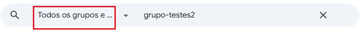
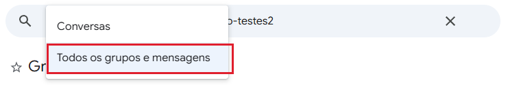
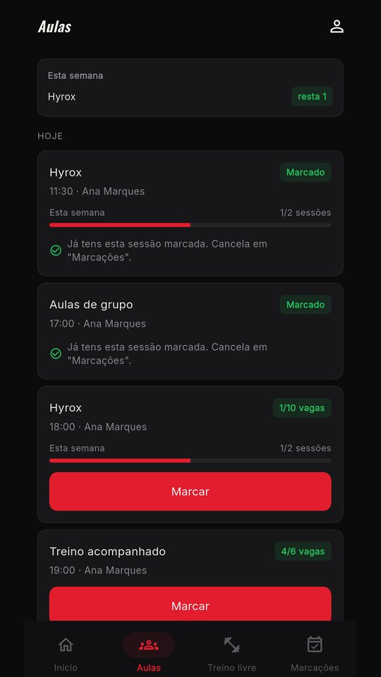
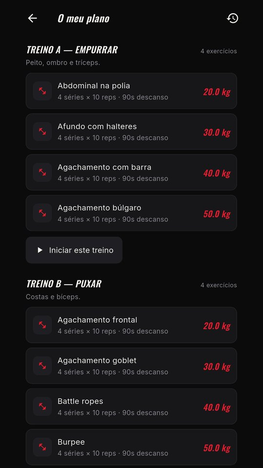

Demora 5 minutos. Segue os passos por ordem.
Toca no teu. Os passos são diferentes — segue só os do teu telemóvel.
Abre a Play Store no telemóvel e toca na bolinha redonda com a tua foto ou inicial, no canto de cima à direita.
Aparece lá o teu email. É esse que vais usar. Guarda-o.
Toca no botão vermelho em baixo. Abre uma página do Google chamada Grupos.
Lá, toca no botão azul “Participar no grupo”, no topo.
Abrir o grupo e participarE se o grupo não aparecer ao tocar no link? Às vezes acontece. Não desistas — procura-o à mão:
Escreve grupo-testes2 na caixa de pesquisa, no topo.

Depois toca na setinha ao lado e escolhe “Todos os grupos e mensagens”. Sem isto ele só procura dentro do que já é teu, e não encontra nada.

O Google demora alguns minutos a reconhecer-te. Não faças nada durante este tempo.
Se avançares já, a app vai dizer que não existe — e não é verdade, é só cedo demais.
Agora sim. Toca no botão vermelho e depois em “Instalar”.
Instalar a app na Play StoreAbre a app, toca em “Já sou membro — entrar”, e escreve o número de sócio e a password que o estúdio te deu.
Na primeira vez, a app pede-te para escolheres uma password nova. Escolhe uma que não te esqueças.
No iPhone é mais simples: não precisas de grupo nenhum. São dois passos.
O TestFlight é uma app da Apple que serve para instalar apps que ainda não estão abertas ao público. É por ela que a nossa app chega até ti.
Abre a App Store, procura por TestFlight, e instala. O ícone é azul claro com uma hélice branca.
Com o TestFlight já instalado, toca no botão vermelho em baixo. Depois toca em “Aceitar” e a seguir em “Instalar”.
Abrir o convite no TestFlightAbre a app, toca em “Já sou membro — entrar”, e escreve o número de sócio e a password que o estúdio te deu.
Na primeira vez, a app pede-te para escolheres uma password nova.
Havia um problema e já está resolvido.
Quem instalou nos primeiros dias podia ficar preso: a app pedia a password nova, ficava a rodar, e voltava a pedir, sem nunca entrar. A culpa não era tua.
Não. A app é gratuita e nunca te vai pedir dados de cartão.
Porque a app ainda está em testes. O Google só a mostra a quem está na lista, e o grupo é essa lista. Quando a app for pública, este passo deixa de existir.
O que aparece na Play Store quando tocas na bolinha do canto de cima à direita. Tem de ser esse no grupo e na Play Store — o mesmo nos dois sítios.
Procura-o à mão: escreve grupo-testes2 na caixa de pesquisa do Google Grupos, e na setinha ao lado escolhe “Todos os grupos e mensagens”. Se deixares em “Conversas”, ele só procura no que já é teu e não encontra nada.
Espera 10 minutos e tenta outra vez. Se continuar, é quase de certeza email trocado: confirma na bolinha da Play Store qual é a conta ativa, e entra no grupo com essa.
Pede na receção. É um número que o estúdio te atribuiu quando te inscreveste — não é o teu telemóvel nem o teu email.
Pede uma nova na receção. Por agora não dá para a recuperares sozinho pela app — é mesmo preciso falar com o estúdio.
Podes, pelo browser do telemóvel: abre aqui. Funciona tudo igual, mas não recebes avisos das aulas.
Só instalar a app no telemóvel novo. A tua conta, as marcações e o teu plano de treino ficam todos lá — entras com o mesmo número de sócio.
Da primeira vez que abriste a app, ela perguntou se podia enviar notificações. Se disseste que não, vai às definições do telemóvel, procura a app NXT, e liga as notificações.
Não percas a manhã com isto. Passa na receção com o telemóvel na mão — resolve-se em dois minutos com alguém a ver o ecrã contigo.
Capturas da app a funcionar, com o horário do estúdio.

